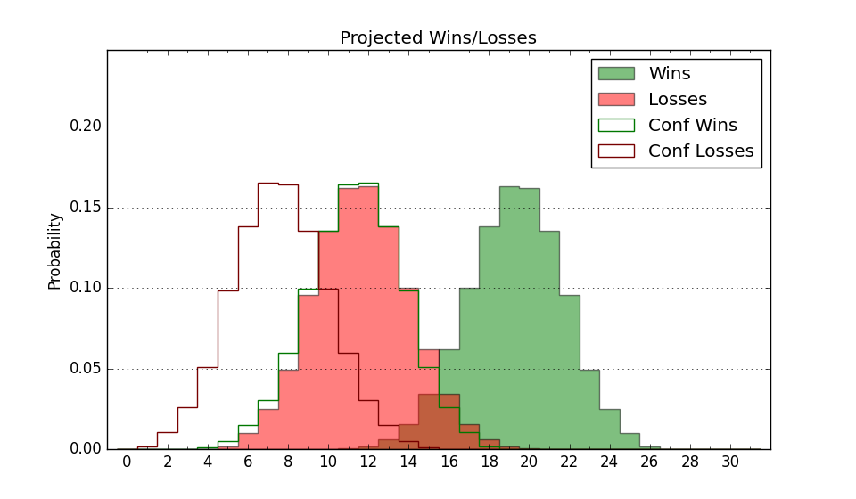

| Home | Game Probabilities | Conferences | Preseason Predictions | Odds Charts | NCAA Tournament |
| City: | Philadelphia, Pennsylvania | |
| Conference: | Atlantic 10 (1st)
| |
| Record: | 1-0 (Conf) 8-4 (Overall) | |
| Ratings: | Comp.: 6.8 (100th) Net: 6.6 (104th) Off: 105.7 (167th) Def: 99.0 (78th) SoR: 2.0 (117th) |
| Remaining | ||||||
|---|---|---|---|---|---|---|
| Date | Opponent | Win Prob | Pred. | |||
| 12/28 | Delaware St. (309) | 93.4% | W 83-63 | |||
| 12/31 | Massachusetts (215) | 85.6% | W 83-69 | |||
| 1/3 | @ Saint Louis (165) | 54.2% | W 78-76 | |||
| 1/8 | @ Duquesne (172) | 55.5% | W 69-67 | |||
| 1/11 | Loyola Chicago (119) | 70.5% | W 74-68 | |||
| 1/17 | VCU (62) | 45.9% | L 67-69 | |||
| 1/21 | @ Davidson (122) | 42.5% | L 72-74 | |||
| 1/24 | @ Dayton (35) | 12.4% | L 66-80 | |||
| 1/29 | Duquesne (172) | 80.9% | W 73-63 | |||
| 2/1 | @ Loyola Chicago (119) | 41.2% | L 70-72 | |||
| 2/7 | Saint Louis (165) | 80.1% | W 82-72 | |||
| 2/12 | La Salle (184) | 82.8% | W 81-69 | |||
| 2/15 | @ George Mason (88) | 28.6% | L 66-72 | |||
| 2/19 | @ George Washington (146) | 49.7% | L 73-74 | |||
| 2/22 | Richmond (208) | 85.1% | W 77-65 | |||
| 2/26 | St. Bonaventure (73) | 53.0% | W 68-67 | |||
| 3/1 | @ Fordham (182) | 58.4% | W 76-74 | |||
| 3/5 | Rhode Island (91) | 60.2% | W 78-75 | |||
| 3/8 | @ La Salle (184) | 58.5% | W 76-74 | |||
| Previous | Game Score | |||||
| Date | Opponent | Win Prob | Result | Off | Def | Net |
| 11/4 | Navy (341) | 95.4% | W 70-63 | -24.5 | 5.9 | -18.6 |
| 11/8 | Central Connecticut (192) | 83.6% | L 67-73 | -12.7 | -12.8 | -25.5 |
| 11/12 | Villanova (61) | 45.3% | W 83-76 | 0.1 | 11.3 | 11.4 |
| 11/15 | @Penn (329) | 83.6% | W 86-69 | 17.5 | -7.0 | 10.5 |
| 11/21 | (N) Texas Tech (14) | 11.9% | W 78-77 | 11.6 | 7.1 | 18.7 |
| 11/22 | (N) Texas (26) | 16.3% | L 58-67 | -11.8 | 12.3 | 0.5 |
| 11/26 | Coppin St. (362) | 98.6% | W 83-54 | 3.9 | -3.5 | 0.5 |
| 12/3 | Princeton (115) | 68.8% | L 69-77 | -14.4 | -5.0 | -19.4 |
| 12/7 | (N) La Salle (184) | 72.2% | W 82-68 | 9.2 | -3.0 | 6.3 |
| 12/10 | College of Charleston (167) | 80.3% | L 75-78 | -9.3 | -8.6 | -17.8 |
| 12/18 | American (250) | 89.0% | W 84-57 | 11.2 | 10.1 | 21.3 |
| 12/21 | (N) Virginia Tech (170) | 69.5% | W 82-62 | 19.8 | 4.8 | 24.6 |
| Stats & Trends | |||||
|---|---|---|---|---|---|
| Current | Day | Week | Month | Season | |
| Composite | 6.8 | +1.8 | +4.0 | +3.9 | -0.7 |
| Comp Rank | 100 | +11 | +27 | +22 | -6 |
| Net Efficiency | 6.6 | +2.4 | +5.5 | +14.3 | -- |
| Net Rank | 104 | +17 | +51 | +141 | -- |
| Off Efficiency | 105.7 | +2.0 | +3.4 | +10.0 | -- |
| Off Rank | 167 | +25 | +41 | +122 | -- |
| Def Efficiency | 99.0 | +0.4 | +2.1 | +4.3 | -- |
| Def Rank | 78 | +14 | +45 | +88 | -- |
| SoS Rank | 290 | +1 | -16 | +34 | -- |
| Exp. Wins | 19.3 | +1.0 | +2.0 | +2.9 | +1.6 |
| Exp. Conf Wins | 11.4 | +0.5 | +1.3 | +2.6 | +1.2 |
| Conf Champ Prob | 4.8 | +1.7 | +3.7 | +2.1 | -3.2 |

| Advanced Stats | ||
|---|---|---|
| Stat | Value | Rank |
| Off Eff FG % | 0.521 | 136 |
| Off Ast Ratio | 0.171 | 53 |
| Off ORB% | 0.271 | 222 |
| Off TO Rate | 0.150 | 169 |
| Off FT Ratio | 0.326 | 194 |
| Def Eff FG % | 0.466 | 63 |
| Def Ast Ratio | 0.143 | 155 |
| Def ORB% | 0.261 | 102 |
| Def TO Rate | 0.153 | 160 |
| Def FT Ratio | 0.261 | 47 |